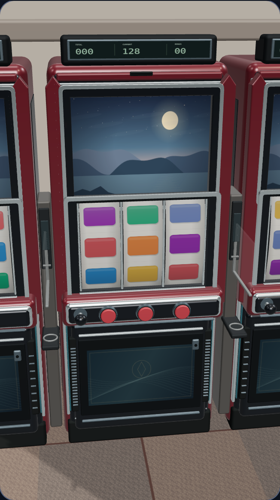
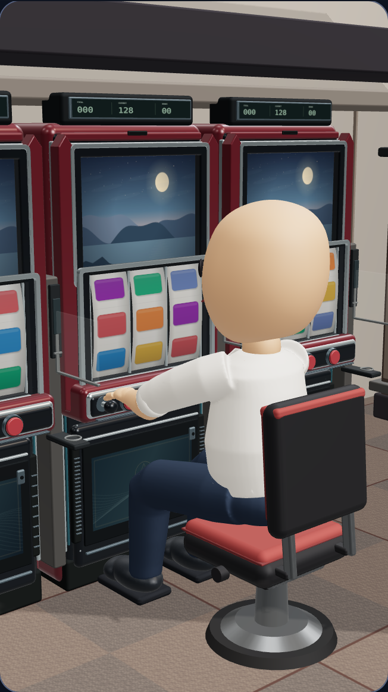
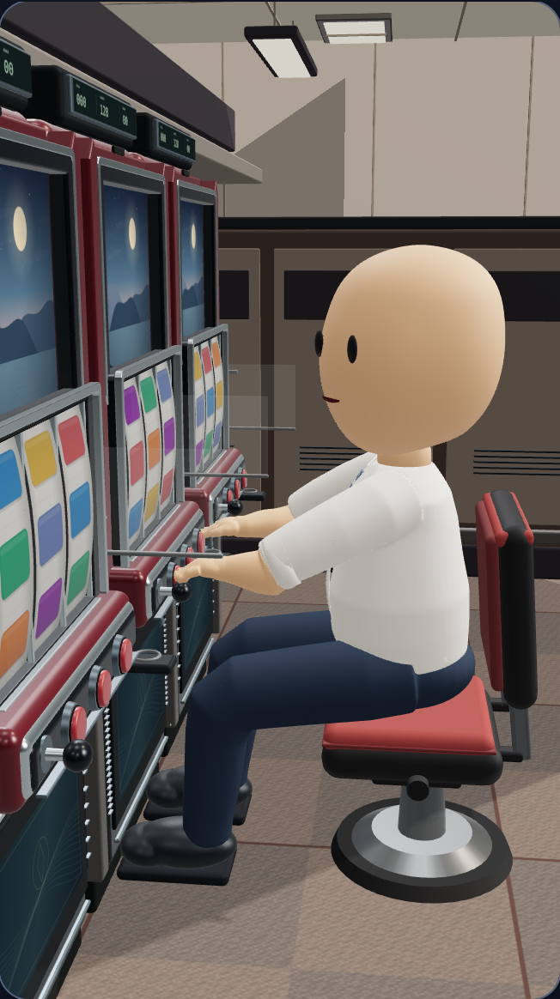
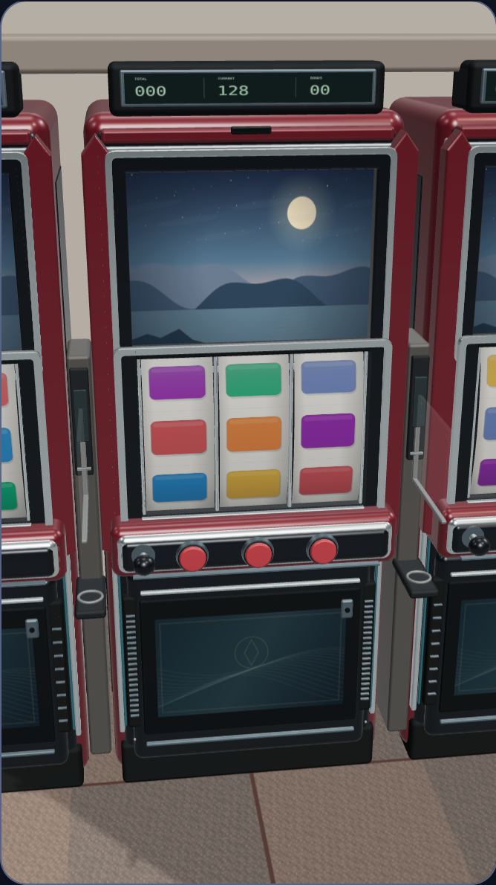
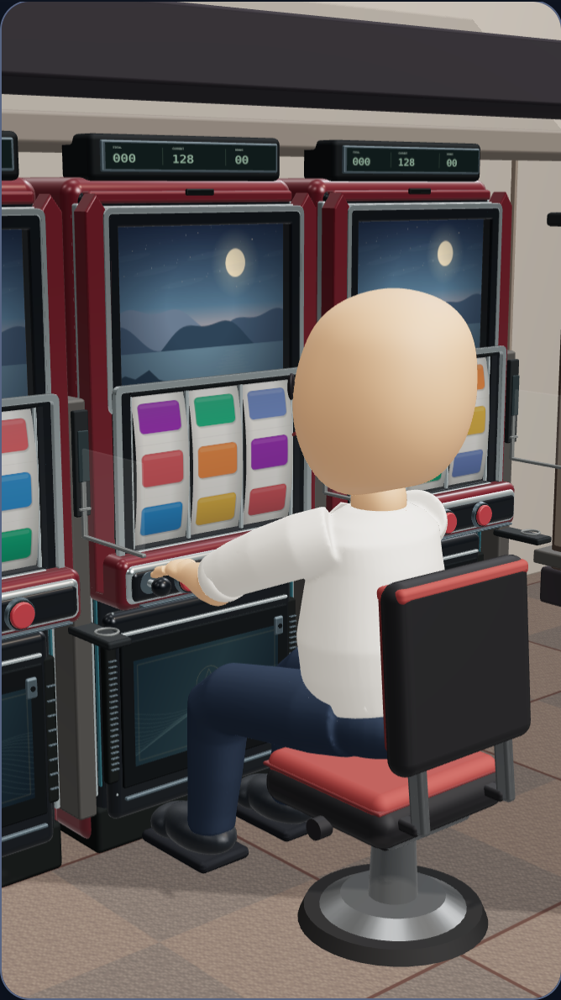

3視点の実レンダリング比較
同じ3D人物・筐体・ポーズをブラウザで描画して撮影した画像です。
このページの画像を3Dプレビューの代わりには使用していません。
動かせる3Dプレビューを開く
C視点：前回と今回
前回から造形に加え、カメラと照明も調整しています。今回のA・B・C視点では、同じ3D人物と同じ静止ポーズを使用しています。
360 × 800 / DPR 2.0

A：打ち手操作視点
B：背後からの肩越し
C：斜め前方の3/4視点390 × 844 / DPR 2.0

A：打ち手操作視点
B：背後からの肩越しC：斜め前方の3/4視点